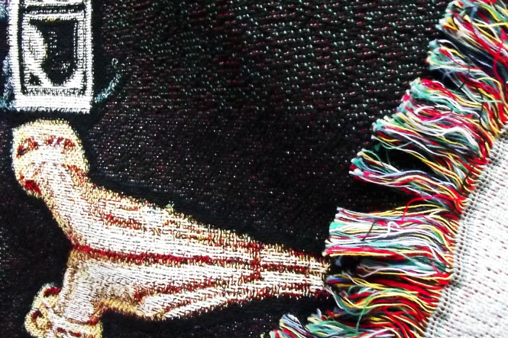
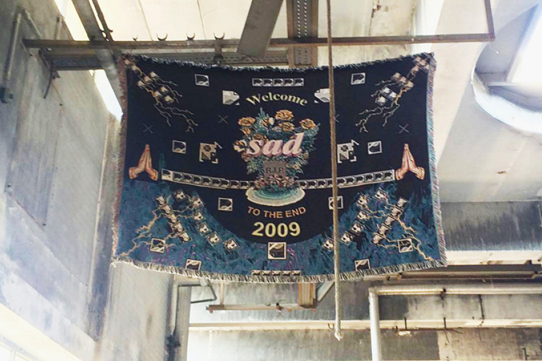
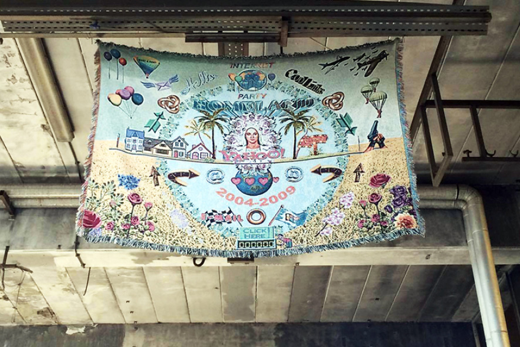
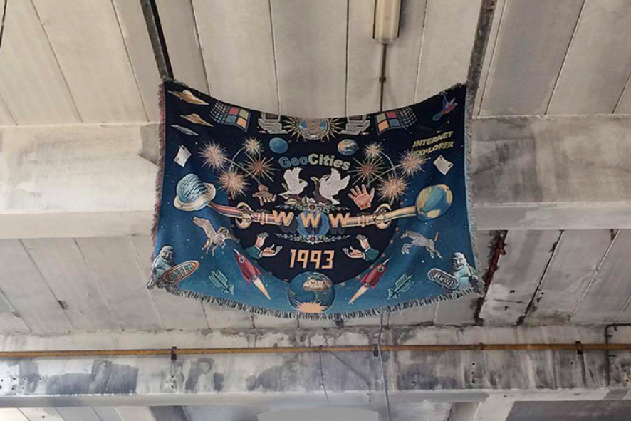
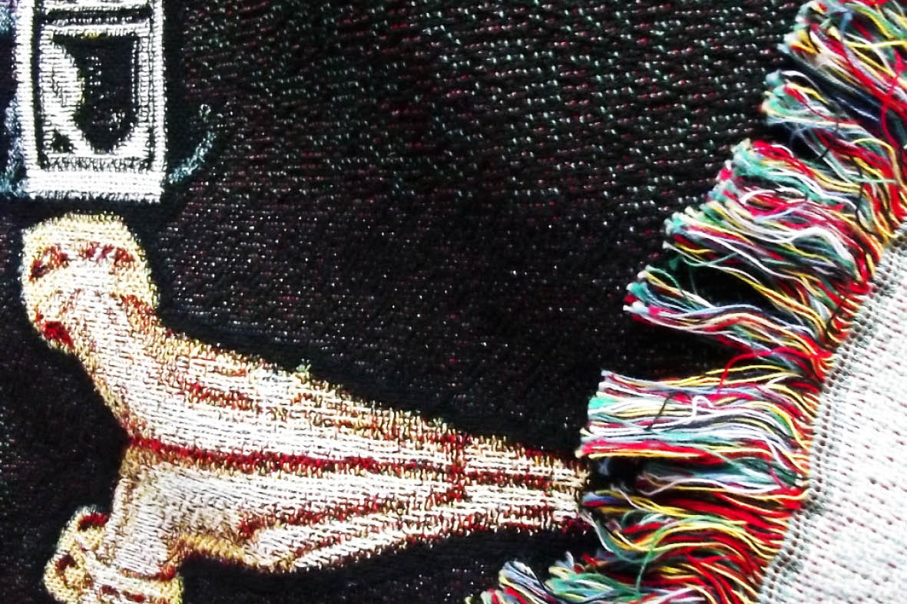
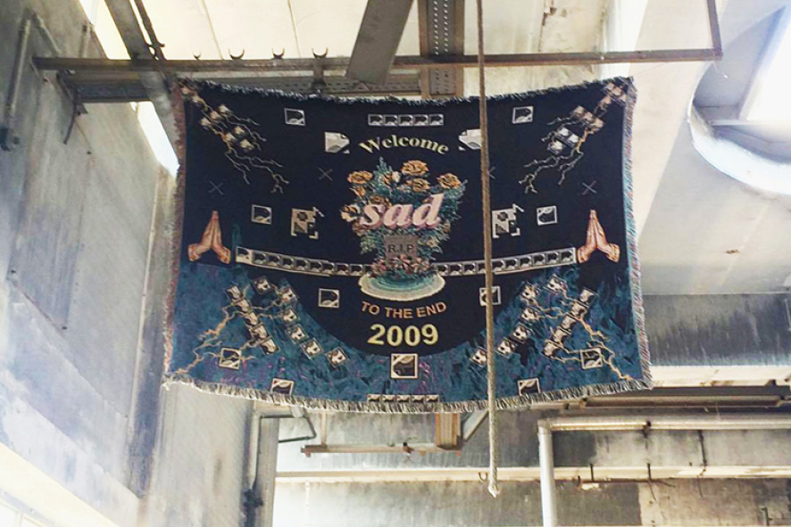
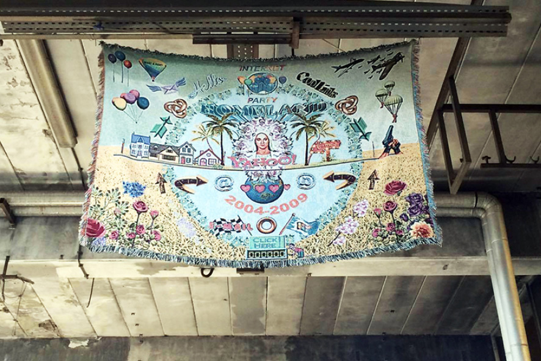
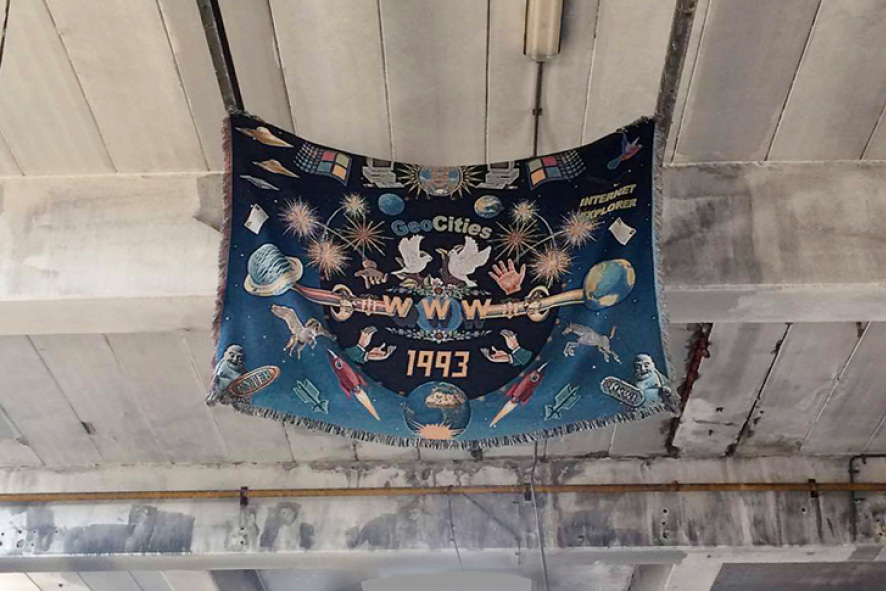

Incidentally, they're all gone
Tapestries
2016
 







→ Designblog
→ Young blood awards @ GOGBOT festival
Incidentally they're all gone, well not exactly gone… more sort of… absent...
The tapestries pay tribute to a web that is gone or - say - hidden and contribute to saving that part of the Internet history that went missing in its fast evolution. They work as a triptych and are inspired by their traditional construction : The birth - the life - the death. After writing my thesis about the archeology of Internet and its folklore, the idea of making tapestries came into my mind.
Initially, tapestries were made to warm up a space but also to educate people that couldn't read about subject or stories of war, religion and so on. The connexion between the Internet archeology and tapestries was really straight froward ; they aslo recall the computer screen and pixels.